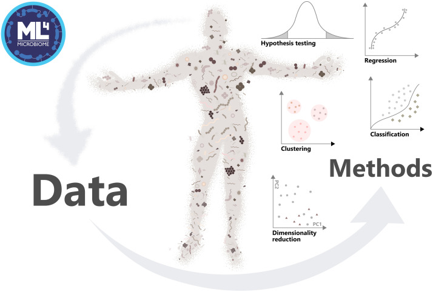
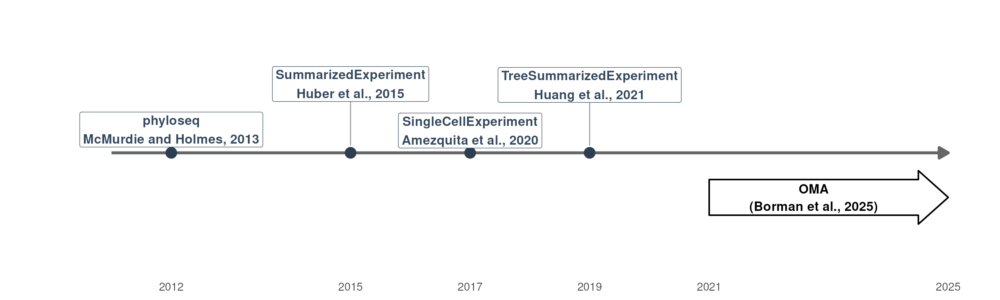
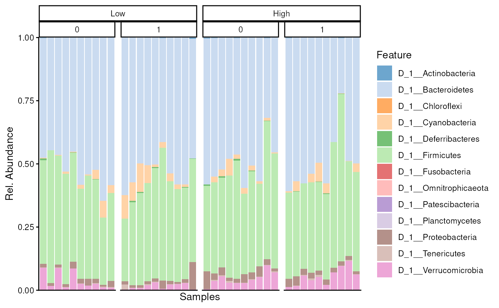
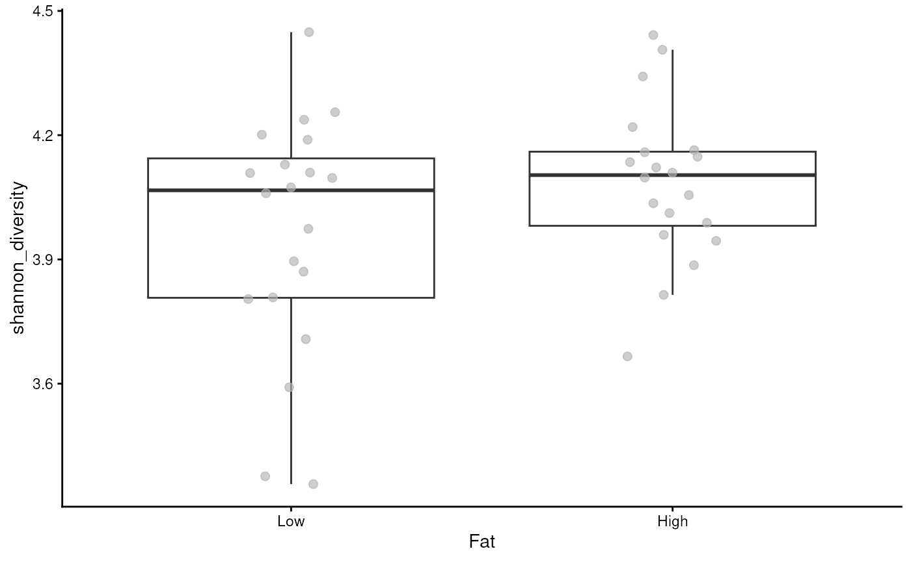
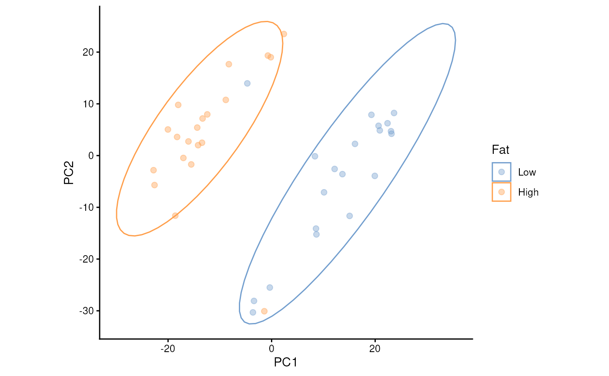
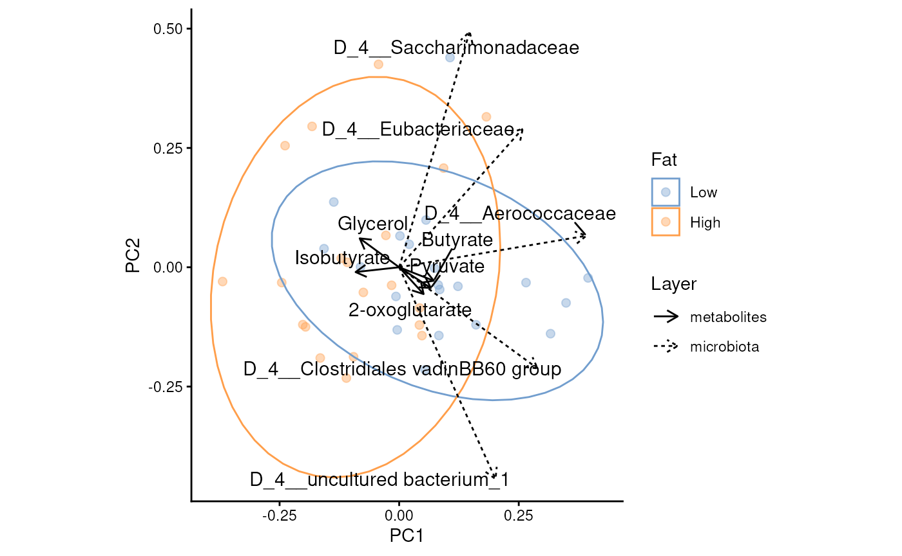

Authors: Tuomas Borman1
Last modified: 05 August, 2026.
Overview
Description
This training session introduces Bioconductor tools for microbiome data science through a practical case study. It focuses on a framework built around the TreeSummarizedExperiment data container, designed for improved efficiency, scalability, and data integration. Participants will gain hands-on experience with common analysis and visualization methods using the mia package family, along with other interoperable tools from the Bioconductor ecosystem. After the session, participants can continue learning through the freely available Orchestrating Microbiome Analysis (OMA) online book.
Pre-requisites
To get most of the training session, you should meet the following pre-requisites.
- You have a basic understanding of R. You have written simple R scripts or used Quarto/RMarkdown documents.
- You are familiar with Bioconductor.
- You have basic understanding on what the microbiome is.
If your time allows, we recommend to spend some time to explore beforehand Orchestrating Microbiome Analysis (OMA) online book.
Participation
Participants are encouraged to ask questions throughout the workshop. The session will follow a tutorial, with participants running the tutorial alongside the instructor.
R / Bioconductor packages used
In this training session, we will cover a common methods and packages for microbiome data science in SummarizedExperiment ecosystem. We will have specific focus on mia, which provides essential methods for conducting microbiome analysis.
Time outline
| Activity | Time |
|---|---|
| Practicalities and background | 15m |
| Trained-guided live coding | 45m |
| Time to try things out on your own | 15m |
| Questions, discussion and recap | 15m |
Learning goals and objectives
Questions
- What is mia and OMA?
- How microbiome data science is conducted in SummarizedExperiment ecosystem?
- What benefits this new ecosystem have compared to previous approaches?
Objectives
Analyze and apply methods: Apply the SummarizedExperiment ecosystem to process and analyze microbiome data.
Create visualizations: Generate and interpret visualizations.
Explore documentation: Use the OMA to explore additional tools and methods.
Training session
Background
Microbiome data science
In microbiome research, researchers study interactions between microbes and their hosts, such as humans. Because of the intricate nature of these relationships, computational methods are essential.

Microbiome-related data containers and ecosystems in Bioconductor
Data containers provide a structured and standardized way to represent complex datasets. This is particularly important in biological research, where a single data table is often insufficient to capture the full richness of a dataset.
Over the years, several approaches to data organization have been developed. One of the first widely adopted data containers in microbiome research was phyloseq (McMurdie and Holmes 2013), designed for 16S amplicon sequencing data. However, it has limitations, particularly in linking multiple experiments and ensuring interoperability between tools in Bioconductor.
SummarizedExperiment (SE) (Huber et al. 2015), on the other hand, was introduced as a general-purpose container for biological data and has become the most widely used format within the Bioconductor ecosystem. It has since been extended to more specialized formats, including SingleCellExperiment (Amezquita et al. 2020) for single-cell data and TreeSummarizedExperiment (TreeSE) (Huang et al. 2021), which is tailored for microbiome datasets.

Timeline of microbiome-related data containter in Bioconductor
Ochestrating Microbiome Analysis with Bioconductor (OMA)
- mia (Data analysis)
- miaViz (Visualization)
- miaSim (Simulation)
- miaTime (Time series analysis)
- miaDash (Graphical user interface)
- iSEEtree (Interactive visualization)
- Expanded by independent developers
Interoperable with the SummarizedExperiment ecosystem


Trained-guided live coding
Import data
Many publicly available microbiome datasets can be accessed directly from Bioconductor packages.
In this workshop, we use an example dataset from the mia package (Hintikka et al. 2021). The study compares mice fed either a high-fat or low-fat diet, with and without prebiotic supplementation. The dataset contains multiple data types, including:
- 16S rRNA amplicon sequencing, which measures microbial abundances.
- Metabolomics, which measures metabolite concentrations.
We first load the dataset and keep these two layers.
library(mia)
data("HintikkaXOData")
mae <- HintikkaXOData
mae <- mae[, , c(1, 2)]
mae
#> A MultiAssayExperiment object of 2 listed
#> experiments with user-defined names and respective classes.
#> Containing an ExperimentList class object of length 2:
#> [1] microbiota: TreeSummarizedExperiment with 12706 rows and 40 columns
#> [2] metabolites: TreeSummarizedExperiment with 38 rows and 40 columns
#> Functionality:
#> experiments() - obtain the ExperimentList instance
#> colData() - the primary/phenotype DataFrame
#> sampleMap() - the sample coordination DataFrame
#> `$`, `[`, `[[` - extract colData columns, subset, or experiment
#> *Format() - convert into a long or wide DataFrame
#> assays() - convert ExperimentList to a SimpleList of matrices
#> exportClass() - save data to flat filesThe dataset is stored as a MultiAssayExperiment, a container designed for multi-omics data. It keeps multiple datasets together while maintaining the links between samples.
For most of this tutorial, we focus only on the microbiome data. Although keeping everything in a MultiAssayExperiment is generally recommended, extracting a single dataset makes it easier to introduc the basic analysis workflow.
The microbiome data is stored as a TreeSummarizedExperiment.
tse <- getWithColData(mae, 1)
tse
#> class: TreeSummarizedExperiment
#> dim: 12706 40
#> metadata(0):
#> assays(1): counts
#> rownames(12706): GAYR01026362.62.2014 CVJT01000011.50.2173 ...
#> JRJTB:03787:02429 JRJTB:03787:02478
#> rowData names(7): Phylum Class ... Species OTU
#> colnames(40): C1 C2 ... C39 C40
#> colData names(6): Sample Rat ... Fat XOS
#> reducedDimNames(0):
#> mainExpName: NULL
#> altExpNames(0):
#> rowLinks: NULL
#> rowTree: NULL
#> colLinks: NULL
#> colTree: NULLData container
TreeSummarizedExperiment
extends SummarizedExperiment
class by adding a support for microbiome-specific datatypes. These
include, for instance, rowTree slot that can be utilized to
store phylogeny or any other hierarchical presentation of the data. All
slots derived from SummarizedExperiment
class are also available in TreeSummarizedExperiment,
providing full backward compatibility.
tse
#> class: TreeSummarizedExperiment
#> dim: 12706 40
#> metadata(0):
#> assays(1): counts
#> rownames(12706): GAYR01026362.62.2014 CVJT01000011.50.2173 ...
#> JRJTB:03787:02429 JRJTB:03787:02478
#> rowData names(7): Phylum Class ... Species OTU
#> colnames(40): C1 C2 ... C39 C40
#> colData names(6): Sample Rat ... Fat XOS
#> reducedDimNames(0):
#> mainExpName: NULL
#> altExpNames(0):
#> rowLinks: NULL
#> rowTree: NULL
#> colLinks: NULL
#> colTree: NULLSlots can be accessed with dedicated accessor functions. For
instance, colData (sample metadata) can be accessed with
colData() function.
colData(tse) |> head()
#> DataFrame with 6 rows and 6 columns
#> Sample Rat Site Diet Fat XOS
#> <character> <factor> <character> <factor> <factor> <numeric>
#> C1 C1 1 Cecum High-fat High 0
#> C2 C2 2 Cecum High-fat High 0
#> C3 C3 3 Cecum High-fat High 0
#> C4 C4 4 Cecum High-fat High 0
#> C5 C5 5 Cecum High-fat High 0
#> C6 C6 6 Cecum High-fat High 0Data processing
Microbiome data has unique characteristics, meaning that dealing with
such data also poses unique challenges and approaches. The
mia package provides methods for performing common
operations on microbiome data within the SE ecosystem.
For instance, agglomeration is commonly used to reduce the number of features or to focus on biologically meaningful subgroups of the data. Agglomeration means merging data into higher taxonomic levels by summing the abundances of related taxa.
Below, we agglomerate the data into all available taxonomy levels.
tse <- agglomerateByRanks(tse)At first glance, it might seem that nothing has changed. However, the
agglomerated data is stored in the altExp slot. This slot
keeps track of the sample mapping and stores different versions of the
data.
We can access data agglomeration into the phylum level with the following command:
altExp(tse, "Phylum")
#> class: TreeSummarizedExperiment
#> dim: 13 40
#> metadata(1): agglomerated_by_rank
#> assays(1): counts
#> rownames(13): D_1__Actinobacteria D_1__Bacteroidetes ...
#> D_1__Tenericutes D_1__Verrucomicrobia
#> rowData names(7): Phylum Class ... Species OTU
#> colnames(40): C1 C2 ... C39 C40
#> colData names(6): Sample Rat ... Fat XOS
#> reducedDimNames(0):
#> mainExpName: NULL
#> altExpNames(0):
#> rowLinks: NULL
#> rowTree: NULL
#> colLinks: NULL
#> colTree: NULLThe data looks similar to original data; only the number of rows has
changed. While we could store the phylum-level data in a separate
variable, it’s better to keep it in the altExp slot, as it
maintains consistent sample mapping for us. Later, we will use
swapAltExp to do this.
Another data processing step where microbiome analysis has unique approaches is transformation. Below, we apply centered log-ratio (CLR) transformations which respect the compositional nature of microbiome data.
tse <- transformAssay(
tse,
assay.type = "counts",
method = "rclr",
altexp = altExpNames(tse)
)The transformed abundance table is stored in the assay
slot. This slot now contains two tables: the original abundance table
and the CLR-transformed table We can access the transformed data with
the following command:
assay(tse, "rclr") |> head()
#> C1 C2 C3 C4
#> GAYR01026362.62.2014 -0.0002623441 1.778808e-05 0.0000818177 7.428821e-05
#> CVJT01000011.50.2173 0.1587599481 2.020993e-01 -0.0579260411 -6.168435e-02
#> KF625183.1.1786 -0.0002623441 1.778808e-05 0.0000818177 7.428821e-05
#> AYSG01000002.292.2076 0.0155608620 -4.169080e-02 -0.0119659732 -1.045133e-02
#> CCPS01000022.154.1916 0.1220580490 2.494333e-01 -0.1150189775 -1.255587e-01
#> KJ923794.1.1762 0.1202980583 1.231969e-01 -0.0626982660 -6.556697e-02
#> C5 C6 C7 C8
#> GAYR01026362.62.2014 1.248544e-06 9.100859e-05 9.327924e-05 4.739471e-05
#> CVJT01000011.50.2173 1.525786e-01 1.570754e-01 1.019419e-01 2.112554e-01
#> KF625183.1.1786 1.248544e-06 9.100859e-05 9.327924e-05 4.739471e-05
#> AYSG01000002.292.2076 -3.040637e-02 -3.783660e-02 -3.237769e-02 -4.674445e-02
#> CCPS01000022.154.1916 1.769339e-01 2.762301e-01 1.743348e-01 2.827598e-01
#> KJ923794.1.1762 9.161459e-02 1.076615e-01 6.274237e-02 1.306155e-01
#> C9 C10 C11 C12
#> GAYR01026362.62.2014 0.0001146643 0.0001661773 -6.390639e-05 0.0001265398
#> CVJT01000011.50.2173 0.1579522385 0.0325893061 2.634468e-01 0.1264890204
#> KF625183.1.1786 0.0001146643 0.0001661773 -6.390639e-05 0.0001265398
#> AYSG01000002.292.2076 -0.0458306284 -0.0272035827 -3.394855e-02 -0.0340920221
#> CCPS01000022.154.1916 0.2553553133 0.1457021265 3.414507e-01 0.2802335952
#> KJ923794.1.1762 0.0977277854 0.0244708587 1.798596e-01 0.0952033696
#> C13 C14 C15 C16
#> GAYR01026362.62.2014 4.623943e-05 0.0001452671 6.980056e-05 4.819521e-05
#> CVJT01000011.50.2173 1.886042e-01 0.0994565361 -1.001429e-01 1.728711e-01
#> KF625183.1.1786 4.623943e-05 0.0001452671 6.980056e-05 4.819521e-05
#> AYSG01000002.292.2076 -3.769012e-02 -0.0349259892 -6.952171e-03 -3.383758e-02
#> CCPS01000022.154.1916 2.897025e-01 0.2316834621 -2.087525e-01 2.802984e-01
#> KJ923794.1.1762 1.271174e-01 0.0706919163 -9.952502e-02 1.199730e-01
#> C17 C18 C19 C20
#> GAYR01026362.62.2014 -4.750944e-06 -0.0002087229 0.0001579506 0.0001968142
#> CVJT01000011.50.2173 2.764851e-01 0.3393202647 0.0127524851 0.1006483699
#> KF625183.1.1786 -4.750944e-06 -0.0002087229 0.0001579506 0.0001968142
#> AYSG01000002.292.2076 -4.822061e-02 -0.0428019866 -0.0289664452 -0.0372817575
#> CCPS01000022.154.1916 3.620244e-01 0.2438178548 0.0659749354 0.2996260294
#> KJ923794.1.1762 1.795679e-01 0.1938683530 -0.0030903333 0.0828222012
#> C21 C22 C23 C24
#> GAYR01026362.62.2014 0.0002332095 -0.0003559807 7.663236e-05 1.198863e-05
#> CVJT01000011.50.2173 -0.0427779496 0.1631092335 -2.668052e-01 -2.297465e-01
#> KF625183.1.1786 0.0002332095 -0.0003559807 7.663236e-05 1.198863e-05
#> AYSG01000002.292.2076 -0.0208464876 0.0174302924 3.691718e-02 4.495590e-02
#> CCPS01000022.154.1916 0.1006321520 -0.0024056027 -3.072529e-01 -2.504896e-01
#> KJ923794.1.1762 -0.0192843025 0.0996090961 -1.725784e-01 -1.354709e-01
#> C25 C26 C27 C28
#> GAYR01026362.62.2014 0.0002079828 -1.083427e-05 -1.642398e-06 5.687529e-05
#> CVJT01000011.50.2173 -0.1635264717 -6.518717e-02 -6.935021e-02 -1.541137e-01
#> KF625183.1.1786 0.0002079828 -1.083427e-05 -1.642399e-06 5.687529e-05
#> AYSG01000002.292.2076 0.0215626271 2.606235e-02 2.520020e-02 2.664432e-02
#> CCPS01000022.154.1916 0.0621612299 7.958361e-03 4.994979e-03 -1.164840e-01
#> KJ923794.1.1762 -0.0573799225 -1.242566e-02 -1.589110e-02 -8.350816e-02
#> C29 C30 C31 C32
#> GAYR01026362.62.2014 2.734097e-05 -9.073633e-05 -0.0003020605 -6.926019e-05
#> CVJT01000011.50.2173 -2.650081e-01 -1.271977e-01 -0.0114001084 -2.623917e-01
#> KF625183.1.1786 2.734097e-05 -9.073633e-05 -0.0003020605 -6.926019e-05
#> AYSG01000002.292.2076 4.271254e-02 3.304413e-02 0.0237024600 4.924005e-02
#> CCPS01000022.154.1916 -3.372455e-01 -2.326430e-01 -0.3341442511 -4.354326e-01
#> KJ923794.1.1762 -1.729585e-01 -8.704963e-02 -0.0530483129 -1.857322e-01
#> C33 C34 C35 C36
#> GAYR01026362.62.2014 -6.628544e-05 4.062687e-05 7.438632e-05 -0.000373922
#> CVJT01000011.50.2173 -2.632823e-01 -2.895203e-01 -2.163018e-01 0.210043382
#> KF625183.1.1786 -6.628544e-05 4.062687e-05 7.438632e-05 -0.000373922
#> AYSG01000002.292.2076 4.961923e-02 4.509162e-02 3.264929e-02 0.012302596
#> CCPS01000022.154.1916 -4.301310e-01 -3.631961e-01 -2.085716e-01 0.054942557
#> KJ923794.1.1762 -1.848631e-01 -1.891635e-01 -1.298045e-01 0.131692053
#> C37 C38 C39 C40
#> GAYR01026362.62.2014 1.312674e-05 9.813212e-05 -5.728847e-05 -0.0004510407
#> CVJT01000011.50.2173 -1.556081e-01 -2.845526e-01 -2.805354e-01 0.2395800304
#> KF625183.1.1786 1.312674e-05 9.813212e-05 -5.728847e-05 -0.0004510407
#> AYSG01000002.292.2076 3.793133e-02 4.050854e-02 4.866857e-02 0.0142670753
#> CCPS01000022.154.1916 -1.043174e-01 -2.926481e-01 -4.690684e-01 0.0250516650
#> KJ923794.1.1762 -7.301999e-02 -1.762759e-01 -2.023994e-01 0.1430016968Community summaries
While mia package include common methods for analysis, miaViz provides methods for visualizing microbiome data. For instance, we can visualize abundance of phyla with a bar plot. To compare study groups, we can visualize them separately.
library(miaViz)
# Get phylum-level data
tse <- swapAltExp(tse, name = "Phylum", withColData = FALSE, saved = "main")
# Create a bar plot
plotAbundance(
tse,
assay.type = "counts",
as.relative = TRUE,
col.var = c("Fat", "XOS"),
facet.cols = TRUE,
scales = "free"
)
# Switch data back to old orientation
tse <- swapAltExp(tse, name = "main", withColData = FALSE)Alpha diversity
To summarize the diversity of microbial communities, alpha diversity is commonly calculated. There are several diversity indices available, all of which measure the number of distinct taxa and how evenly their abundances are distributed, each with a different emphasis.
tse <- addAlpha(tse, assay.type = "counts")The results are stored in colData. By default,
addAlpha() returns a set of indices that considers
different aspects of diversity. Commonly, the results are visualized
with a box plot.
plotBoxplot(tse, x = "Fat", col.var = "shannon_diversity")
Beta diversity
While alpha diversity reflects within-sample diversity, beta diversity measures diversity between samples. This allows us to assess whether there are patterns in microbial profiles associated with covariates.
Below, we calculate perform principal component analysis (PCA). The standard choice is to apply it to CLR-transformed data
After calculating the results, we can visualize them with the diagnosis.
plotOrdination(tse, dimred = "PCA", colour.by = "Fat", add.ellipse = TRUE)
Multi-omics
Integrating multiple omics layers has become increasingly common in microbiome research. While MultiAssayExperiment provides a convenient container for storing multi-omics data, until recently relatively few analysis methods worked directly with it. As a result, users often had to extract individual assays before applying downstream methods.
Fortunately, this is changing. An increasing number of packages now support MultiAssayExperiment directly, making it easier to build streamlined workflows for multi-omics analysis.
Let’s return to our MultiAssayExperiment
object. It stores one SummarizedExperiment
for each omics layer and uses a sampleMap to match samples
across assays.
# Lets put the TreeSE back to MAE
tse <- swapAltExp(tse, "Family")
mae[[1]] <- tse
mae
#> A MultiAssayExperiment object of 2 listed
#> experiments with user-defined names and respective classes.
#> Containing an ExperimentList class object of length 2:
#> [1] microbiota: TreeSummarizedExperiment with 81 rows and 40 columns
#> [2] metabolites: TreeSummarizedExperiment with 38 rows and 40 columns
#> Functionality:
#> experiments() - obtain the ExperimentList instance
#> colData() - the primary/phenotype DataFrame
#> sampleMap() - the sample coordination DataFrame
#> `$`, `[`, `[[` - extract colData columns, subset, or experiment
#> *Format() - convert into a long or wide DataFrame
#> assays() - convert ExperimentList to a SimpleList of matrices
#> exportClass() - save data to flat filesOne simple integration strategy is to calculate correlations between microbial taxa and metabolites. This approach is easy to interpret and can be further improved by restricting the analysis to biologically plausible feature pairs. The anansi package provides tools for this type of knowledge-guided analysis.
However, microbial communities often act collectively rather than as individual taxa. Consequently, pairwise correlations may miss more complex relationships.
An alternative is Joint Robust PCA (Joint-RPCA) (Vargas et al. 2026), which identifies variation that is shared across multiple omics datasets.
The method works in two stages:
It estimates a joint low-rank representation of the datasets, reducing noise while preserving variation shared across omics layers.
It performs PCA on this shared representation to visualize the dominant patterns across all datasets.
The following example performs Joint-RPCA using the microbiome and metabolomics data.
# Apply CLR without imputation
mae[[1]] <- transformAssay(
mae[[1]],
assay.type = "counts",
method = "rclr",
impute = FALSE,
name = "rclr_non_imputed")
# Apply log10 for metabolomics
mae[[2]] <- transformAssay(
mae[[2]],
assay.type = "nmr",
method = "log10"
)
# Run joint-RPCA
mae <- addJointRPCA(
mae,
experiments = c(1, 2),
assay.types = c("rclr_non_imputed", "log10")
)
# Visualize results
plotJointRPCA(mae, "JointRPCA", colour.by = "Fat", add.ellipse = TRUE, ntop = 5)
Time to try things out on your own!
- Go to OMA (bioconductor.org/books/release/OMA/)
- Navigate to Differential abundance analysis chapter
- Do exercises 4-6
- Explore the book!
Differential abundance analysis
file_path <- file.path("maaslin3_output", "figures", "summary_plot.png")
knitr::include_graphics(file_path)Questions, discussion and recap
- Microbiome data science in SummarizedExperiment ecosystem
- Scalable and computationally efficient
- Integration of multi-table and multi-omics datasets
Thank you for your time!
Join us!
Online book: bioconductor.org/books/release/OMA/
Discussion forums: Bioconductor Zulip
Session information
sessionInfo()
#> R version 4.6.1 (2026-06-24)
#> Platform: x86_64-pc-linux-gnu
#> Running under: Ubuntu 24.04.4 LTS
#>
#> Matrix products: default
#> BLAS: /usr/lib/x86_64-linux-gnu/openblas-pthread/libblas.so.3
#> LAPACK: /usr/lib/x86_64-linux-gnu/openblas-pthread/libopenblasp-r0.3.26.so; LAPACK version 3.12.0
#>
#> locale:
#> [1] LC_CTYPE=en_US.UTF-8 LC_NUMERIC=C
#> [3] LC_TIME=en_US.UTF-8 LC_COLLATE=en_US.UTF-8
#> [5] LC_MONETARY=en_US.UTF-8 LC_MESSAGES=en_US.UTF-8
#> [7] LC_PAPER=en_US.UTF-8 LC_NAME=C
#> [9] LC_ADDRESS=C LC_TELEPHONE=C
#> [11] LC_MEASUREMENT=en_US.UTF-8 LC_IDENTIFICATION=C
#>
#> time zone: Etc/UTC
#> tzcode source: system (glibc)
#>
#> attached base packages:
#> [1] stats4 stats graphics grDevices utils datasets methods
#> [8] base
#>
#> other attached packages:
#> [1] scater_1.41.2 scuttle_1.23.1
#> [3] miaViz_1.21.3 ggraph_2.2.2
#> [5] mia_1.21.7 TreeSummarizedExperiment_2.21.0
#> [7] Biostrings_2.81.6 XVector_0.53.0
#> [9] SingleCellExperiment_1.35.2 MultiAssayExperiment_1.39.0
#> [11] SummarizedExperiment_1.43.0 Biobase_2.73.2
#> [13] GenomicRanges_1.65.1 Seqinfo_1.3.0
#> [15] IRanges_2.47.2 S4Vectors_0.51.6
#> [17] BiocGenerics_0.59.11 generics_0.1.4
#> [19] MatrixGenerics_1.25.0 matrixStats_1.5.0
#> [21] ggrepel_0.9.8 ggplot2_4.0.3
#>
#> loaded via a namespace (and not attached):
#> [1] RColorBrewer_1.1-3 jsonlite_2.0.0
#> [3] magrittr_2.0.5 ggbeeswarm_0.7.3
#> [5] farver_2.1.2 rmarkdown_2.31
#> [7] fs_2.1.0 ragg_1.5.2
#> [9] vctrs_0.7.3 memoise_2.0.1
#> [11] DelayedMatrixStats_1.35.0 ggtree_4.3.0
#> [13] htmltools_0.5.9 S4Arrays_1.13.0
#> [15] BiocBaseUtils_1.15.1 BiocNeighbors_2.7.2
#> [17] janeaustenr_1.0.0 SparseArray_1.13.2
#> [19] gridGraphics_0.5-1 sass_0.4.10
#> [21] bslib_0.12.0 tokenizers_0.3.0
#> [23] htmlwidgets_1.6.4 desc_1.4.3
#> [25] plyr_1.8.9 DECIPHER_3.9.2
#> [27] cachem_1.1.0 igraph_2.3.3
#> [29] lifecycle_1.0.5 pkgconfig_2.0.3
#> [31] rsvd_1.0.5 Matrix_1.7-6
#> [33] R6_2.6.1 fastmap_1.2.0
#> [35] tidytext_0.4.3 digest_0.6.39
#> [37] aplot_0.3.1 ggnewscale_0.5.2
#> [39] patchwork_1.3.2 irlba_2.3.7
#> [41] SnowballC_0.7.1 textshaping_1.0.5
#> [43] vegan_2.7-5 beachmat_2.29.0
#> [45] labeling_0.4.3 polyclip_1.10-7
#> [47] abind_1.4-8 mgcv_1.9-4
#> [49] compiler_4.6.1 fontquiver_0.2.1
#> [51] withr_3.0.3 S7_0.2.2
#> [53] BiocParallel_1.47.0 viridis_0.6.5
#> [55] DBI_1.3.0 ggforce_0.5.0
#> [57] MASS_7.3-66 rappdirs_0.3.4
#> [59] DelayedArray_0.39.4 bluster_1.23.0
#> [61] permute_0.9-10 tools_4.6.1
#> [63] vipor_0.4.7 otel_0.2.0
#> [65] beeswarm_0.4.0 ape_5.8-1
#> [67] glue_1.8.1 nlme_3.1-170
#> [69] grid_4.6.1 cluster_2.1.8.3
#> [71] reshape2_1.4.5 gtable_0.3.6
#> [73] tidyr_1.3.2 BiocSingular_1.29.0
#> [75] tidygraph_1.3.1 ScaledMatrix_1.21.0
#> [77] pillar_1.11.1 stringr_1.6.0
#> [79] yulab.utils_0.2.4 splines_4.6.1
#> [81] dplyr_1.2.1 tweenr_2.0.3
#> [83] treeio_1.37.0 lattice_0.22-9
#> [85] tidyselect_1.2.1 DirichletMultinomial_1.55.0
#> [87] fontLiberation_0.1.0 knitr_1.51
#> [89] fontBitstreamVera_0.1.1 gridExtra_2.3.1
#> [91] xfun_0.60 graphlayouts_1.2.5
#> [93] stringi_1.8.9 lazyeval_0.2.3
#> [95] ggfun_0.2.1 yaml_2.3.12
#> [97] evaluate_1.0.5 codetools_0.2-20
#> [99] gdtools_0.5.1 tibble_3.3.1
#> [101] BiocManager_1.30.27 ggplotify_0.1.3
#> [103] cli_3.6.6 systemfonts_1.3.2
#> [105] jquerylib_0.1.4 Rcpp_1.1.2
#> [107] parallel_4.6.1 ggh4x_0.3.1
#> [109] pkgdown_2.2.1 sparseMatrixStats_1.25.0
#> [111] decontam_1.33.0 viridisLite_0.4.3
#> [113] tidytree_0.4.8 ggiraph_0.9.6
#> [115] scales_1.4.0 purrr_1.2.2
#> [117] crayon_1.5.3 BiocStyle_2.41.0
#> [119] rlang_1.3.0References
University of Turku, tvborm@utu.fi↩︎